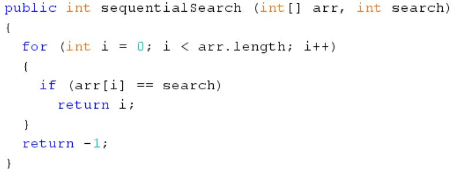
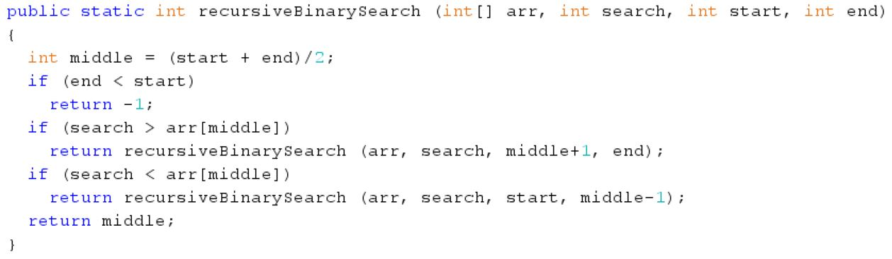
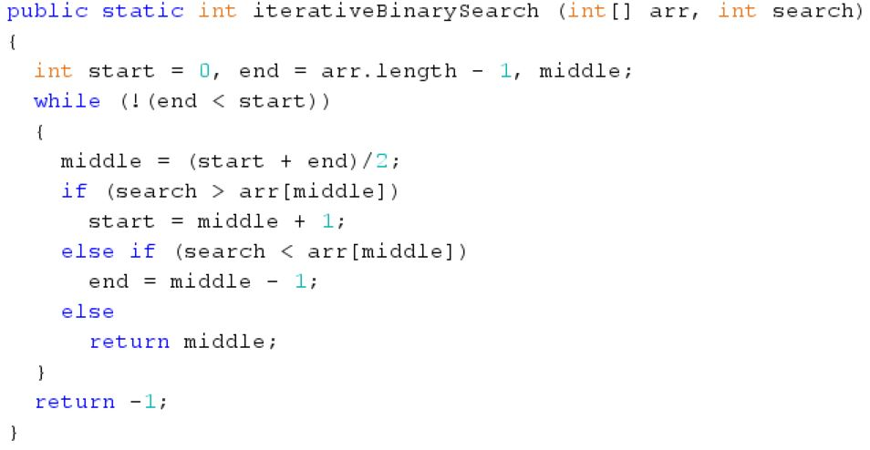
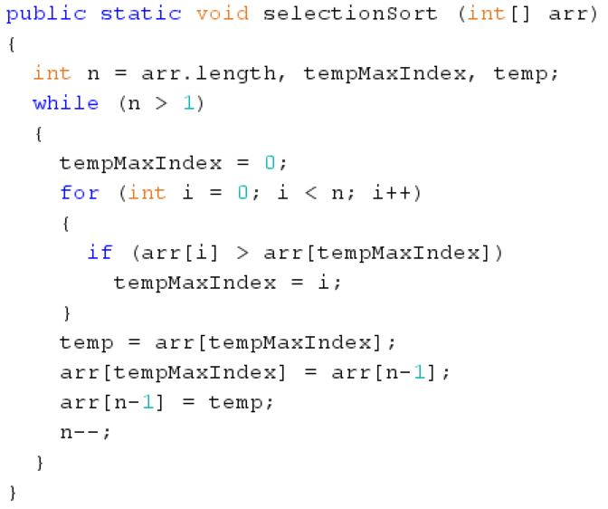
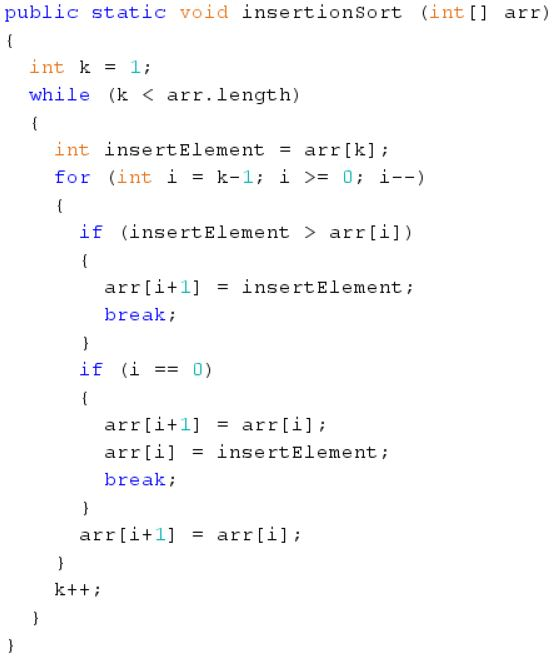
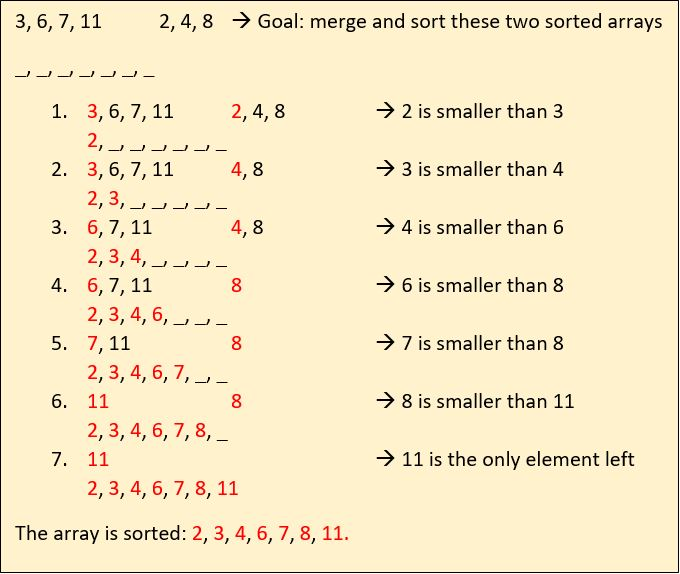
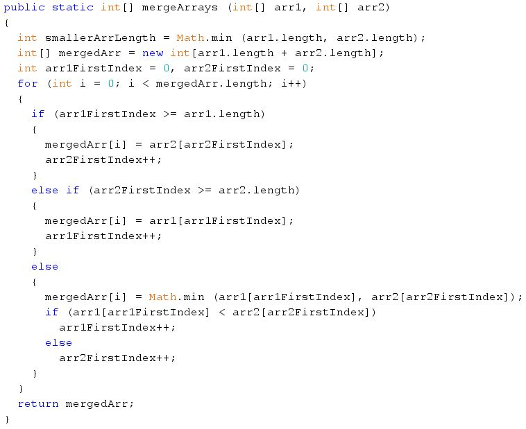
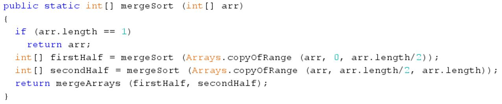
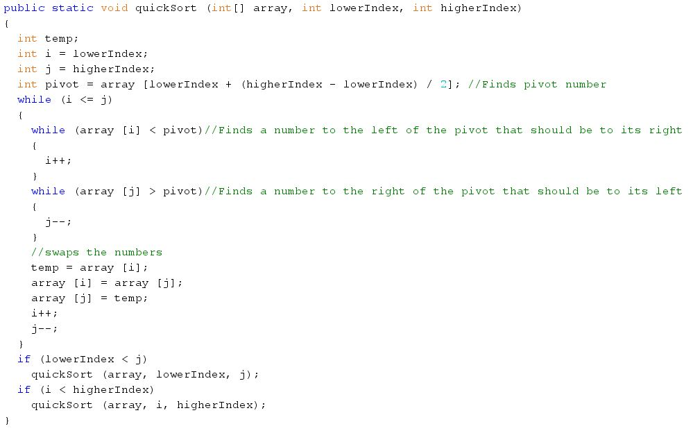

Hello there! This page is an in-depth tutorial on searching and sorting algorithms. Before starting this tutorial, I'd advise
you to finish my Arrays/ArrayLists tutorial so that you have the necessary prerequisites for this tutorial. In this tutorial, I will be going
step-by-step through the most common searching and sorting algorithms, how to implement them, ideal usage, efficiency, and tips when using them.
I will be teaching you two searching algorithms: sequential search and binary search, and three sorting algorithms: selection sort, insertion sort,
and merge sort. I'll also touch on quicksort a bit at the end. There will also be a bunch of examples spread out over the tutorial so that you're comfortable with the concepts. Once again, example codes can be
found in the "My Projects" section of the website, if you'd prefer to play with the code along the way.
Let's begin with the most basic searching algorithm - sequential search (also known as linear search). Given its name, you might have already had
a vague idea of how it works. Sequential search basically goes through each element in an array (or an ArrayList) from left to right until it finds the value that
it was looking for. It then returns the index where the value was found, but if the value was not found in the array, it returns -1. Here is some
pseudo-code for the algorithm:
loop through array
if element is found then return the index at which it is found
if the loop exits, the element was not found so return -1
Here is an actual implementation of the algorithm:

You would use sequential search when you have an unsorted array and you want to find an element, but if you have a sorted array you can use a
more computationally efficient searching algorithm (more on this later). For example, if you had an array of student heights in no particular order
and you were searching for one specific height, sequential search would be the ideal algorithm to use.
Before we get into the computational efficiency of the algorithm, let's talk about the idea of time complexity. The time complexity of the algorithm
is denoted with "Big-O Notation", which is basically a capital O followed by some function. The faster that function in the brackets grows, the
more comparisons are required and the slower the algorithm. Common time complexities include O(n^2), O(n*log n), and O(n). Here is a graph
of common time complexities that shows their relative speeds:
The average number of comparisons in the algorithm is n/2, where n is the length of the array, meaning that the time complexity of the algorithm
is O(n). One drawback to using this searching algorithm is that if the element does not exist in the array, the number of comparisons is n, which
means that time is wasted. However, there is no way to overcome this for unsorted arrays. One advantage of sequential search is that it is very
intuitive and easy to understand, even for complete beginners. It is literally just a single array traversal with a check each time to see if the
current element matches with the search value. Just something to remember when implementing your own sequential search is that you have to remember
to set the correct bounds on i for your for loop. For example, if you let i get bigger than the array length - 1, an ArrayIndexOutOfBoundsException
will be thrown.
Next, we'll talk about binary search. One thing to remember right away before getting into the details is that binary search only works if the
array is already sorted in either ascending or descending order. With that out of the way, let's first describe what binary search does before the
actual code. Binary search is a divide-and-conquer algorithm, meaning that it splits up the original problem into smaller and smaller parts, eventually
getting to the solution. In this case, it works by always comparing the target value to middle element in the current searching range and accordingly
halving the current searching range, repeating the process on this new searching range. If that doesn't make sense, here's some pseudo-code:
compare the target value to the middle element in the range
if the target value is greater than the middle element repeat the process with the right half of the array
if the target value is less than the middle element repeat the process with the left half of the array
if the target value is equal to the middle element, you have found the element
This algorithm works because we are given that the array is already sorted (in this case in ascending order). Therefore, if the target value
is greater than the middle element, we can narrow down the potential choices to the second half of the array and repeat the process. Similarly,
if the target value is less than the middle element, we can narrow down the potential choices to the first half and repeat the process.
As for the actual implementation, there are two types of binary search - the recursive and iterative algorithms. The recursive one is what we've
been describing thus far, where you repeat the process over and over on the new search range by calling the method over and over. The iterative one is where you do this in a loop
instead of by using method calling. Here is an implementation for recursive binary search:

Here is an implementation for iterative binary search:

You would use binary search whenever you have a data set that's already sorted in ascending or descending order. For example, say you have a list
of transactions at a bank that is sorted in ascending order by amount of money and you want to search for a transaction for a specific amount
of money. Since the list is already sorted, binary search would be the most efficient way to do this. In the real world, banks would have a
huge amount of transactions and if the data is already sorted, binary search is the ideal algorithm for making sure that they can access their
records quickly. This is also thanks to binary search's amazing computational efficiency. In a sorted data set of 1,000,000,000 element, binary
search would only need around 30 comparisons to find a specific element. Since the algorithm splits the search range in half each time,
the time complexity can be determined to be O(log n), where log refers to log base 2.
One thing to keep in mind when implementing a binary search is that while the recursive solution is more elegant in terms of the algorithm,
it might use more memory because of the repeated function calls (this is explained in more detail in the recursion tutorial). Also, one common
error that many new programmers make is that they forget to account for the case where the element is not found in the array. In this case,
you have to remember to check for when the upper bound gets less than the lower bound, in which case the element wasn't found and you have to either
exit the loop or stop the method calling. Otherwise, you will get a StackOverflowError in the recursive algorithm as the memory is being
used up. For the iterative algorithm, it will just keep running since it basically becomes an infinite loop.
Now that we're done talking about the searching algorithms, we'll talk about the sorting algorithms. Before we get started, keep in mind that
our implementations of the algorithms are for sorting values in ascending order for the sake of simplicity, but it's just as easy to sort in
descending order. Let's start off with the simplest one:
selection sort. The basic idea behind selection sort is that we first select the largest number in the n elements of the array (where
n is the length of the array). Then we swap that element with the (n-1)'th element in the array (the last element). Now we decrement n by 1,
and repeat the process on the first (n-1) elements in the array. We keep doing this until there is only 1 element left in the portion that's
unsorted. Since this element is at index 0, it has to be the first element in the sorted array and thus the array is sorted.
Here is some pseudo-code for the algorithm:
loop through the first n elements in the array to find the maximum value
swap this value with the one at the (n-1)'th index
decrement n by 1 and repeat the process
As you can tell, it is not too complicated and is relatively straightforward. Here is an implementation of the algorithm:

Because of its simplicity in terms of implementation, selection sort is often used in small projects where you do not want to over-complicate
your code. Also, one area where selection sort shines is in memory usage. Selection sort is an in-place sorting algorithm, meaning that
no other data structures (such as arrays/ArrayLists) are required. In addition, since selection sort only performs the swapping if the elements
are not pre-sorted, the algorithm is very efficient if the array is smaller and already partly sorted.
Since the algorithm has an array traversal inside of an array traversal, the time complexity is O(n^2). This can become a disadvantage for larger
data sets, as the number of comparisons increases really fast as n increases. In the real world, this leads to slower performance for large amounts
of data, meaning that this sort should only be used for small projects where you do not need to worry about performance.
One common mistake that beginners make when implementing the algorithm is that they forget to restrict n to ensure that it stays larger than 1.
This leads to an ArrayIndexOutOfBoundsException being thrown by Java.
The next sorting algorithm we'll be talking about is insertion sort. Now, this sort is a bit more complicated than selection sort, but to make
things easier we'll first spend a few minutes talking about how the algorithm works on a high level. Basically, insertion works by repeatedly
taking the first element in the unsorted portion of the array and inserting it where it's supposed to go in the sorted portion. It keeps doing
this until all the elements in the unsorted portion have been transferred to the sorted portion, which means that the array has been sorted.
Here's some pseudo-code for the algorithm:
In the beginning, the first element of the array is in the sorted portion while the rest are in the unsorted portion
Take the first element in the unsorted portion and traverse through the sorted portion until that element's correct position is found
Every time you pass an element in the unsorted portion that is greater than the target element, move that element one to the right
This way, when you find the target element's correct position in the array, all the elements to the right have already been shifted
When you do find the target element's correct position, insert it into that position
Repeat this process for all the other elements in the unsorted portion
Here's the actual implementation for the algorithm. I highly encourage you to download the code in the "My Projects" section to tinker with it
and get more comfortable with the algorithm.

One key area where insertion sort really shines is its ability to adapt to partially sorted algorithms. Similar to selection sort, insertion sort
is extremely efficient when the array is partially sorted, even more efficient than selection sort. This makes it ideal in cases where the programmer
knows that there is probably an increasing trend in the data. For example, if you had to sort the temperatures of 30 days in the month of June,
insertion sort would be ideal since we can expect an increasing temperature trend (since you're getting closer to summer). In addition, insertion
sort is ideal for smaller arrays, because its low computational efficiency is only evident for larger data sets. Another scenario where insertion
sort should be used is if you need to sort a list of values while receiving these values. For example, if you wanted to make a program that sorts
integers from user input as those integers are being inputted, insertion sort is the sort to use because of how it functions (remember that it traverses
through the array and inserts each value in the unsorted part into the sorted part, this could be used to insert each user inputted value as it gets inputted into the
sorted part). Finally, similarly to selection sort, insertion sort is an in-place algorithm, meaning that if memory usage is a concern, insertion
sort can be a viable option.
Moving on, the time complexity of insertion sort is also O(n^2) because it too is a traversal inside a traversal. This means that if computational
speed is important for your particular application (think company databases), insertion sort may not be a feasible choice. Finally, one common error
that programmers often make when implementing the algorithm is that they forget to bound k (the lower bound of the unsorted portion) to less than the
array's length. This leads to an ArrayIndexOutOfBoundsException if not fixed.
Finally, we're going to be talking about merge sort, which is although one of the most difficult sorting algorithms to understand, is
probably one of the more fun ones to learn (and is one of my personal favorites). Okay, so let's get straight to the idea behind merge sort.
To begin with, merge sort is a divide-and-conquer algorithm, similar to binary search. This means that it solves the problem by repeatedly splitting
it up into smaller pieces and solving each piece separately. Merge sort is based upon the idea of merging two sorted arrays. To see what I
mean by that, let's take two simple scenarios:
1. Let's say that we have two unsorted integer arrays and we wanted to combine (merge) these arrays together and sort them. Since there is no
evident shortcut, we would just have to create a new array with the elements of the first and second arrays, and just sort this new array.
If we use insertion sort, we can get the time complexity down to O(n*m) (remember that it is still a traversal inside a traversal), where n is the length of the first array and m is the length of the second one.
2. Let's say this time that we have two sorted integer arrays and we wanted to merge these arrays together and sort them. However, this time,
we can use the fact that the two arrays are already sorted to our advantage. The trick is to just take the smaller of the first unused element
from each array each time. Here's what I mean:

The time complexity of this algorithm is O(n+m) since it is basically just one traversal, which is much better than O(m*n) especially for larger data sets. This idea that merging and sorting two
sorted arrays is much faster than two unsorted ones is what makes merge sort so fast.
Now that we know how the merge algorithm is supposed to work, here's some pseudo-code for the actual implementation:
create an array to store the merged and sorted array
traverse through this new array and as long as none of the two parameter arrays have been used up (as in have already been fully transferred to this new array),
put the smaller of the first unused elements in the parameter arrays into this new array
if one of the parameter arrays have been used up, transfer the remaining elements in the second parameter array into the new array
Here is the actual code for the mergeArrays method (note that this isn't yet the actual merge sort, but this method is the helper method for it and
is the basis behind the actual sorting which we'll get to in a sec):

Take your time to play around with the code and fully understand it before moving on, because the merging idea is the difficult part about merge sort.
Now, we're going to be talking about the easy part of merge sort - the actual sorting of an array. The basic idea behind merge sort uses recursion,
and if you're unfamiliar with it I encourage you to check out my recursion tutorial before moving on. How the sort works is that it recursively
splits the given array into halves until they are of length 1. Then it starts merging these arrays recursively using the mergeArrays method that we
just developed. The pseudo-code for the algorithm is:
if the array length is 1, return that array
otherwise, create a new array that sorts and stores the first half of the parameter array using merge sort
create another array that sorts and stores the second half of the parameter array using merge sort
//once the recursion is over (i.e. it has reached the base case of array length = 1), it will start to merge the arrays:
return the merged array composed of the first half array and the second half array, using the mergeArrays method
Now that we understand how the sort works as a whole, here is an implementation of the merge sort method (note that it uses the mergeArrays method developed earlier):

As I said earlier, the actual sorting method of merge sort is relatively straightforward, but the challenging part is the mergeArrays method. Right away
when looking at the code, you might notice that we end up creating a bunch of temporary arrays in our sorting algorithm. In addition,
the recursion means that there are a lot of method calls happening which also takes up memory. All this leads to the fact that merge sort has one
of the worst memory usages of all sorting algorithms - definitely worse than the other ones explained in this tutorial. This means that merge sort
might not be the sort for you if you're working with very large data sets.
That being said, merge sort does beat out most other sorts in one aspect - speed (or more formally, computational efficiency). Merge sort
is downright the fastest comparison-based sorting algorithm out there (meaning that it works for all other data types that can somehow be compared,
e.g. Strings can be compared lexicographically). Since the algorithm involves a divide-and-conquer part that continually splits the array
into two pieces (the log n part) and a merge part which is essentially a single traversal (the n part), the time complexity is O(n*log n). If you
scroll back up to the time complexities comparison graph, you can see that for large data sets, this is unbelievably faster compared to the other
sorts we've learned (which are O(n^2)).
In the real world, merge sort is used in medium-sized database applications because of its stability when it comes to time complexity (it has no worst-casae
scenario where the time complexity might be worse than O(n*log n)). It is also relatively easy to implement once you understand the gist behind it,
so it is useful in smaller projects where time efficiency is crucial but memory usage is not (think video game graphics).
As for potential sources of error, you have to remember to remember to include a base case in the mergeSort method when the length of the array is one.
Although this really applies to all recursive algorithms (learn more about recursion in my tutorial), it can be easy to forget when implementing merge
sort because of how simple the code really is. For some people, including myself, when their code is really straightforward and simple they sometimes
forget the most important part - causing to an infamous StackOverflowError. Also, in the mergeArrays method you have to remember to check if either
of the parameter arrays has been used up (fully transferred to the merged array), because otherwise it will cause an ArrayIndexOutOfBoundsException.
As promised, I'll also give you a brief introduction to another commonly used sorting algorithm - quicksort. Similar to mergesort, quicksort
is a divide-and-conquer algorithm, meaning that it continually breaks down the problem into smaller pieces and handles each smaller problem separately.
It works by first choosing an element called the pivot which is usually chosen to be the first, last or middle element of the array. Then the
array is partitioned so that all elements smaller than the pivot are positioned before the pivot and all elements larger than the pivot are positioned
after. Now each subarray (the one before and the one after the pivot) is sorted quicksort. Eventually, this recursion will stop once the arrays being
sorted are of length two, in which case the partioning will also sort the array (since there's only two elements). Here's an implementation of the
quicksort algorithm:

Unlike mergesort, quicksort uses less memory because it does not need to make temporary arrays, and the only extra memory used is just from the method
method calls from the recursion. Also, although the average time complexity of quicksort is O(n * log n) - the same as mergesort - it can increase
to O(n^2) in the worst case scenario when the pivot repeatedly does not fit near the centre of the data. This means that while quicksort is ideal
when you want speed combined with memory efficiency, it might not be the best option if speed is more important in that scenario. In the real world,
quicksort is the algorithm used in the built-in sort for many languages such as Java, C++, Python, and more.
Finally, I'll just share a few pieces advice if you ever find yourself using searching and sorting algorithms in the future. To begin, if you're ever
creating search/sort algorithms for a class, it is a good idea to keep those methods static. This is because each instance of the class doesn't really
need its own method for the algorithm. This way, the same method is accessible for all objects of that class, which is more convenient. Another thing
to keep in mind when implementing search/sort algorithms, especially the more complex ones such as binary search or merge sort, is that it is always
a good idea to use pseudo-code. I literally cannot stress this point enough. Especially if/when you start learning more complicated algorithms,
pseudo-code is a great way to actually understand what your code is going to do rather than just typing up a bunch of lifeless, magical code.
Finally, when trouble-shooting your sorting algorithms (which is going to happen a lot, trust me) one trick is to print the array at each step of the algorithm
so you can pinpoint where the error is occuring. This is a clever way to quickly find what's causing that pesky ArrayIndexOutOfBoundsException or
whatever else that might be giving you pain and suffering.
The following example is one of my projects for the ICS4U0 course that was for the searching/sorting unit. The problem is as follows: Given a text
file named "Countries-Population.txt" that stores country name, capital name, area, and population for all countries, read in this data and store
it in 4 ArrayLists. Then write each country along with its population into a file called "sortedByCountry.txt" in ascending alphabetical order. Finally,
write each country along with its population into a file called "sortedByPopulation.txt" in descending numerically sorted order by population.
The "Countries-Population.txt" file has data stored line-by-line in this format: Canada Ottawa 3,855,081 33,098,932. The "sortedByCountry.txt" and
"sortedByPopulation.txt" files should have the country names and populations separated by "\t\t\t", so each line should look like: India 1,095,351,995.
Here is a link to a Github repository that contains the "Countries-Population.txt" file as well as my solution to the problem. Note that
the more efficient your sorting algorithm, the better. Try to solve it by yourself as a challenge before you look at my code.